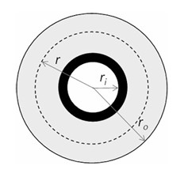

1 Basic concepts
1.1 Excercises on basic concepts of heat transfer
The excersises are created in three levels. The first level consists of exercises to train and automate basic calculations. This level can be revisited at anytime to tune calculational skills. The second level consists of exersises where the skills from the first level needs to connected in order to solve basic fire engineering problems. The third level includes all from the second level but demands more with regards to connecting first- and second level skills. As a complement to these exercises, interactive exercises will be lauched.
1.1.1 First level skills
1.1.1.1 Steady state conduction
A wall consists of three layers according to table 2.1
| \(d_i\) [mm] | Material | \(\lambda_i\) [W/mK] |
|---|---|---|
| 20 | Wood board | 0.14 |
| 100 | Fibre insulation | 0.04 |
| 20 | Gypsum board | 0.5 |
The temperature on the outer face of the wooden board has a constant temperature of 75°C. The opposing side of the wall has a temperature of 15°C, Calculate the temperaturs at the insulations interface surfaces \(T_1\) and \(T_2\).
Solution
By calculating the total thermal resistance of the wall, \(R_{tot}\), it is possible to find intermidiate temperatures using the equation
\[ T_i = T_0 + \frac{\sum_{j = 0}^{i} R_j}{R_{tot}} \left(T_n - T_0\right) \]
\(R_{tot}\) is the sum of each of the layers as
\[ R_{tot} = R_{wood} + R_{ins} + R_{gyp} = \frac{l_{wood}}{\lambda_{wood}} + \frac{l_{ins}}{\lambda_{ins}} + \frac{l_{gyp}}{\lambda_{gyp}} = \frac{0.02}{0.14} + \frac{0.1}{0.04} + \frac{0.12}{0.5} = 2.67 \text{ } m²K/W \]
As \(T_0\) = 75°C and \(T_n\) = 15°C, the temperatures at each layer interface, \(T_1\) and \(T_2\) can be calculated as
\[ T_1 = T_0 + \frac{R_{wood}}{R_{tot}} \left(T_n - T_0 \right) = 75 + \frac{\tfrac{0.02}{0.14}}{2.67} \left(15 - 75 \right) = 71.8°C \]
and
\[ T_2 = T_0 + \frac{R_{wood} + R_{ins}}{R_{tot}} \left(T_n - T_0 \right) = 75 + \frac{\tfrac{0.02}{0.14} + \tfrac{0.1}{0.04}}{2.67} \left(15 - 75 \right) = 15.6°C \]
1.1.1.2 Surface temperature
Assume the heat transfer coefficient, \(h_{tot}\), equal to 5 W/m²K for the exposed side and a constant temperature on the unexposed side, \(T_2\), equal to 20°C. Calculate the surface temperature, \(T_1\).
| \(d_i\) [mm] | Material | \(\lambda_i\) [W/mK] |
|---|---|---|
| 12 | Wood board | 0.2 |
Solution
By calculating the total thermal resistance of the wall, \(R_{tot}\), it is possible to find intermidiate temperatures using the equation
\[ T_i = T_0 + \frac{\sum_{j = 0}^{i} R_j}{R_{tot}} \left(T_n - T_0\right) \]
In this case, \(T_0\) = \(T_g\), \(T_n\) = \(T_2\), and \(R_{tot}\) is the total resistance of the wall including the thermal resistance of the exposed side.
\[ R_{tot} = R_{h} + R_{k} = \frac{1}{h_{tot}} + \frac{l_{wood}}{\lambda_{wood}} = \frac{1}{5} + \frac{0.02}{0.14} = 0.26 \text{ } m²K/W \]
As \(T_g\) = 100°C and \(T_2\) = 20°C, the temperatures at the surface, \(T_1\), can be calculated as
\[ T_1 = T_g + \frac{R_{h}}{R_{tot}} \left(T_2 - T_g \right) = 75 + \frac{\tfrac{1}{5}}{0.26} \left(20 - 100 \right) = 38.5°C \]
An alternative way to calculate the surface temperature is by using
\[ T_1 = \frac{R_h T_2 + R_k T_g}{R_{h} + R_k} = 38.5°C \]
Both solutions yield the same result and are proper to use.
1.1.1.3 Cylinder temperature
Assume an insulated steel pipe with a liquid medium of the temperature, \(T_{in} = 100°C\). The pipe is exposed from the outside by a temperature, \(T_f\) = 800°C. The inner heat transfer coefficient, \(h_{in}\) = 100 W/m²K for the exposed outside, \(h_{out}\) = 50 W/m²K. The conductivity of steel, \(\lambda_s\) = 45 W/mK and the conductivity of the insulation, \(\lambda_i\) = 0.5 W/mK. Calculate the temperature of the steel pipe, \(T_1\).

- Inner radius, \(r_i\) = 28 mm
- Steel thickness, \(d_s\) = 2 mm
- Insulation thickness, \(d_i\) = 50 mm
Solution
By calculating the total thermal resistance of the wall, \(R_{tot}\), it is possible to find intermidiate temperatures using the equation
\[ T_i = T_0 + \frac{\sum_{j = 0}^{i} R_j}{R_{tot}} \left(T_n - T_0\right) \]
In this case, \(T_0\) = \(T_in\), \(T_n\) = \(T_f\), and \(R_{tot}\) is the total resistance of the pipe including the thermal resistance of both sides.
\[ R_{tot} = R_{in} + R_{s} + R_{i} + R_{out} = \frac{1}{2\pi}\left(\frac{1}{r_i h_{in}} + \frac{\ln\left(r_{o,s}/r_{i,s}\right)}{\lambda_{s}} + \frac{\ln\left(r_{o,i}/r_{i,i}\right)}{\lambda_{i}} + \frac{1}{r_{o,i} h_{out}}\right) \approx 0.41 \text{ } m²K/W \]
As \(T_{in}\) = 100°C and \(T_f\) = 800°C, the temperatures at the surface, \(T_1\), can be calculated as
\[ T_1 = T_{in} + \frac{R_{in}}{R_{tot}} \left(T_f - T_{in} \right) = 100 + \frac{\tfrac{1}{2\pi 0.0028 \cdot 100}}{0.41} \left(800 - 100 \right) = 197.3°C \]
An alternative way to calculate the surface temperature is by using
\[ T_1 = \frac{R_{in} T_2 + \left(R_s + R_i + R_{out}\right) T_g}{R_{tot}} = 197.3°C \]
Both solutions yield the same result and are proper to use.